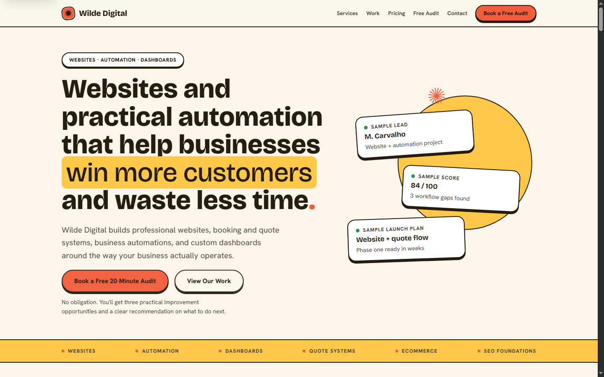

App prototypes
Turn a focused product idea into a working React, Expo, or API-backed MVP with real screens, state, validation, and deploy notes.
Full-stack developer · Open to work
I'm a full-stack developer who has shipped real web and mobile products end to end since 2024 — React and Expo apps, Node/Supabase backends, Shopify stores, and business sites. I'm looking for a junior or entry-level full-stack role (remote) where I can keep shipping and learning fast.
What I do
Turn a focused product idea into a working React, Expo, or API-backed MVP with real screens, state, validation, and deploy notes.
Build small-business workflows around imports, reports, review queues, Supabase data ownership, and practical admin screens.
Improve collection structure, Liquid sections, product content, internal links, schema, and repeatable catalog maintenance.
Ship service pages, quote paths, local SEO basics, trust content, responsive layouts, and simple deployment handoffs.
Selected work

Mobile app with AI backend
Daily 60 is an Expo app that takes one goal and turns it into a weekly plan with daily actions, reminders, reflections, and streak progress.
Planning tools often turn one goal into too much setup. Daily 60 keeps the first version narrow: one goal, one weekly plan, one action for today.
The AI key had to stay off-device, responses needed to survive malformed model output, and the app still needed a useful fallback path.
Expo Router handles the app flow, Zustand and MMKV keep local state fast, and an Express API owns prompt handling, quotas, JSON cleanup, and Zod validation.
I kept plan generation server-side instead of calling AI from the app. That adds an API hop, but protects secrets and makes validation, rate limits, and provider changes easier.
Vitest covers the mobile store and backend behavior, with GitHub Actions CI running typecheck and test jobs before handoff.
The result is a reviewable mobile MVP with onboarding, AI plan generation, daily actions, reminders, haptics, reflections, streaks, and deploy notes.

Finance dashboard
FinTrack is a finance dashboard for small service businesses. It helps organize transactions, budgets, recurring costs, reports, and accountant exports.
Small service businesses run their finances out of spreadsheets and lose track of which transactions they have actually reviewed, what is recurring, and whether they are over budget.
It had to be useful with zero setup, yet sit on real per-business accounts without a rewrite. Every business's data must stay isolated from every other's.
React and Vite on the front, Recharts for charts, PapaParse for CSV. Supabase Auth backs a 7-table Postgres schema with 9 row-level-security policies so each account only sees its own rows.
I made the app demoable before auth existed by persisting review state and budgets client-side first, then layering Supabase on top. That keeps a dual data path, but the product was usable and shippable at every step.
Verified the import, review, and budget flows in the browser against six months of seeded data, including duplicate detection, vendor-category memory, and over-budget highlighting.
A reviewable import-to-report dashboard with per-business RLS isolation and a one-click public demo anyone can open without signing up.

Shopify ecommerce storefront
Kakebo Shop is a live Shopify storefront for anime and collectible products. I worked on collection pages, product presentation, navigation, and SEO structure.
A new store with a deep catalog but weak discovery. Collections, navigation, and on-page SEO needed real structure before shoppers and search engines could find products.
All work happened inside a live theme. Changes had to be safe to ship to a running storefront without breaking checkout or existing pages.
Customized Liquid sections, snippets, and collection templates, and drove bulk product, collection, and SEO-field updates through Shopify Admin GraphQL scripts instead of editing items by hand.
Scripting catalog edits via the Admin API cost more setup time than manual edits, but made changes repeatable and safe to re-run across the whole catalog.
QA across collection, product, and navigation states, plus FAQ schema and visible SEO content to support discovery.
A live, navigable storefront with cleaner collection structure, internal linking, and structured data. The store link is below.

Lead-generation website
Wilde Digital is a static service website with project pages, service pages, an ROI calculator, lead forms, mini CRM behavior, and Netlify deployment setup.
A web studio's own site has to convert visitors into qualified leads, not just look good. It needed capture, qualification, and a way to follow up.
Static hosting with no server, but still needing lead capture, scoring, and tracking that the owner could run without a backend or database bill.
Hand-built HTML, CSS, and JavaScript on Netlify with structured data, sitemap, and robots. An ROI calculator and lead forms feed a client-side mini-CRM with status tracking, CSV export, and local persistence, plus a fallback email flow.
A static site with a client-side CRM is cheap and deploys instantly, at the cost of server-side persistence. That was the right call for a solo studio's lead volume.
Node test scripts cover the ROI model, lead intake, and qualification logic so the calculator and scoring stay correct as copy and pricing change.
A live lead-generation site with a working ROI calculator and a capture-to-export pipeline. The site link is below.

Local service website
Luxury Solutions is a static website for an exterior cleaning business. I focused on service pages, local pages, trust signals, and making quote requests easy on mobile.
A local exterior-cleaning business needed to show up for "near me" searches and make requesting a quote effortless on a phone.
Local SEO had to cover many service and area combinations, stay fast and mobile-first, and remain simple enough for the owner to hand off and maintain.
A static responsive site with per-service and per-service-area pages, trust content like testimonials and recent work, and a build pipeline for prerender, image optimization, SEO checks, sitemap and robots, and a deploy zip.
Generating many service-area pages widens local search reach but adds pages to maintain. I leaned toward coverage because local intent searches are where the leads are.
Ran the SEO checks and build pipeline before each deploy to catch broken metadata, missing pages, and unoptimized images.
A live local-service site built around quote requests and local search. The site link is below.
Capabilities
React, React Native, Expo, TypeScript, JavaScript, HTML, CSS, Tailwind, Vite, Next.js, and responsive UI.
Node, Express, Supabase, PostgreSQL/RLS, REST APIs, Zod validation, serverless functions, and local-first state.
Shopify, Liquid, Admin GraphQL, collection architecture, product catalog workflows, structured data, and ecommerce SEO.
GitHub, GitHub Actions CI, Netlify, Render, EAS builds, Vitest, Node test runner, and deployment handoffs.
How I work
Start by narrowing the first version to something that can actually be built.
Map the workflow before spending time on screens, data models, or automation.
Use AI tools when they help, then review the code, test the flow, and check it in the browser.
Leave behind deploy steps, notes, or a clear next task instead of a half-finished handoff.
Contact
I'm looking for a remote junior or entry-level full-stack role. Happy to walk through any of the projects above, talk through my code, or chat about how I'd fit your team.
Open to remote junior and entry-level full-stack roles. I usually reply within a day.
{kind=link}